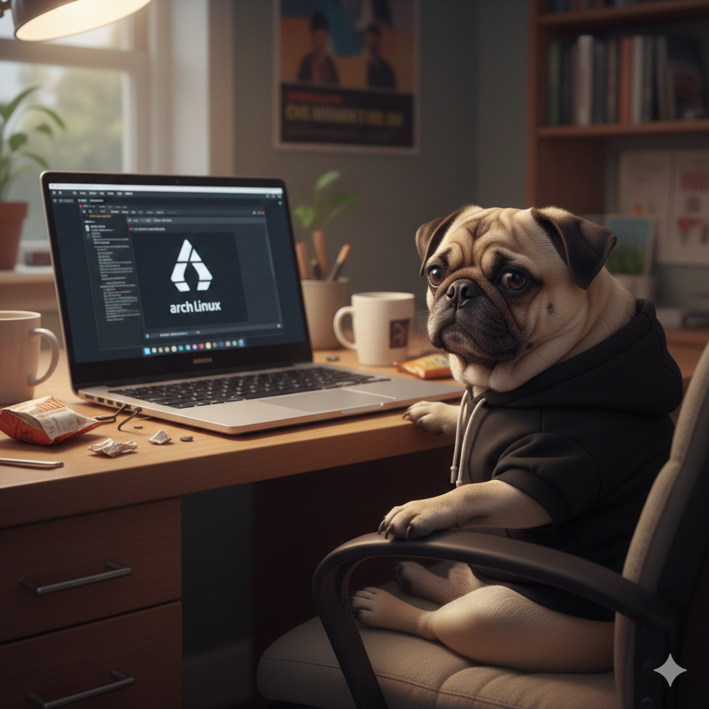

Мопсы и Linux — философия спокойного DevOps
Этот сайт посвящён мопсам и Linux — двум символам спокойствия, стабильности и философии «если работает — не трогай».
Почему Linux
Стабильность и предсказуемость
Linux не требует лишнего внимания, работает стабильно и не просит перезагрузиться без причины.
Open-source философия
Благодаря открытому коду можно адаптировать систему под любые задачи.
Почему мопсы
Комфорт и предсказуемость
Мопсы ценят комфорт, предсказуемость и сон. Всё как хороший сервер.
Спокойствие
Спокойствие мопсов напоминает стабильность Linux-систем.
Быстрые ссылки
Рекомендуем посмотреть
FAQ
- Почему мопсы и Linux?
- Потому что оба ценят спокойствие, стабильность и предсказуемость.
- Можно ли установить Linux мопсу?
- Шутка! Но мопсы и администраторы любят стабильность Linux.
- Что такое DevOps?
- Философия управления инфраструктурой и автоматизации процессов.
Наши навыки
- Linux администрирование
- Open Source проекты
- Философия DevOps
Кейсы
Мопс-сервер
Стабильный сервер, который работает без перезагрузок и ошибок.
Open Source библиотека
Проект для изучения Linux через практику.
Домашний DevOps
Автоматизация рутины и минимизация ошибок.